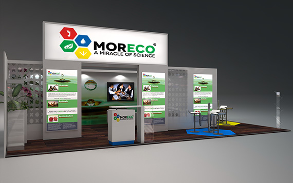
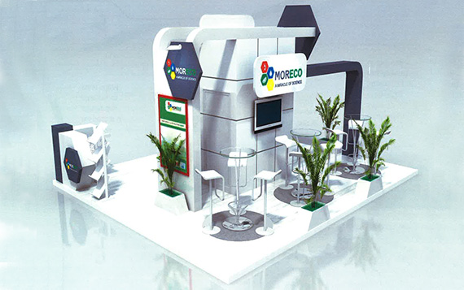

جناح شركتنا في المعرض الدّولي للفلاحة

المعرض الفلاحي الدّولي لمكناس: 24 أبريل إلى 3 ماي
تقديم رقم 1 لشركة Moreco بالمعرض الفلاحي الدّولي لمكناس
تفاصيل العرض
- الجمعة 25 أبريل 2014
- من الساعة 3 بعد الزوال حتى الساعة 4 بعد الزّوال
- المعرض الفلاحي الدّولي لمكناس، قاعة الليمون
- عرض للبروفيسور المبرّز ديرك فاندن بيرغ، العلوم الصيدلانية والأدوية البيولوجية.
الترجمة من قبل:M.A. Rhazi Soufiane
تقديم رقم 2 لشركة Moreco بالمعرض الفلاحي الدّولي لمكناس
تفاصيل العرض
- الأحد 27 أبريل 2014
- من الساعة 9 صباحا حتى الساعة 10 صباحاً
- المعرض الفلاحي الدّولي لمكناس، قاعة الليمون
- عرض للبروفيسور المبرّز ديرك فاندن بيرغ، العلوم الصيدلانية والأدوية البيولوجية.
الترجمة من قبل:M.A. Rhazi Soufiane
تحميل
للمزيد من المعلومات حول جناح شركتنا في المعرض الدّولي للفلاحة بمكناس:حمّل من هنا.
جناح شركة Moreco في معرض الفلاحة

الزراعة السعودية: 7 إلى 10 شتنبر
المعرض الدّولي لتجارة الزراعة وقطاع المياه والزراعة
تفاصيل العرض
- من السابع إلى العاشر من شتنبر 2014
- مركز الرياض الدّولي للمؤتمرات والمعارض
- عرض للبروفيسور المبرّز ديرك فاندن بيرغ، العلوم الصيدلانية والأدوية البيولوجية.
الترجمة من قبل:M.A. Rhazi Soufiane
تحميل
للمزيد من المعلومات حول جناح شركتنا في الملتقى السّعودي للفلاحة :حمّل من.
Moreco @ SIAM
تحميل
أغلب التحميلات الموجودة في موقع شركة Moreco هي ملفات pdf. لفتح هذه الملفات المرجو استعمال Adobe.